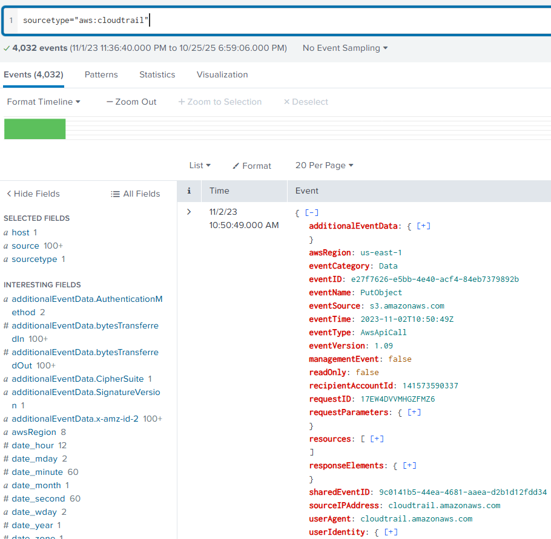
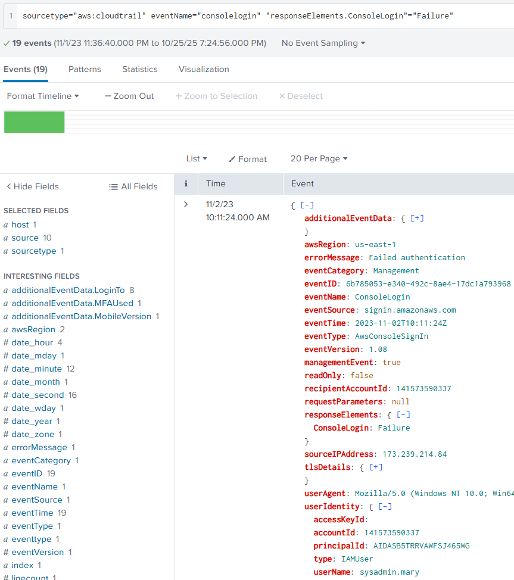
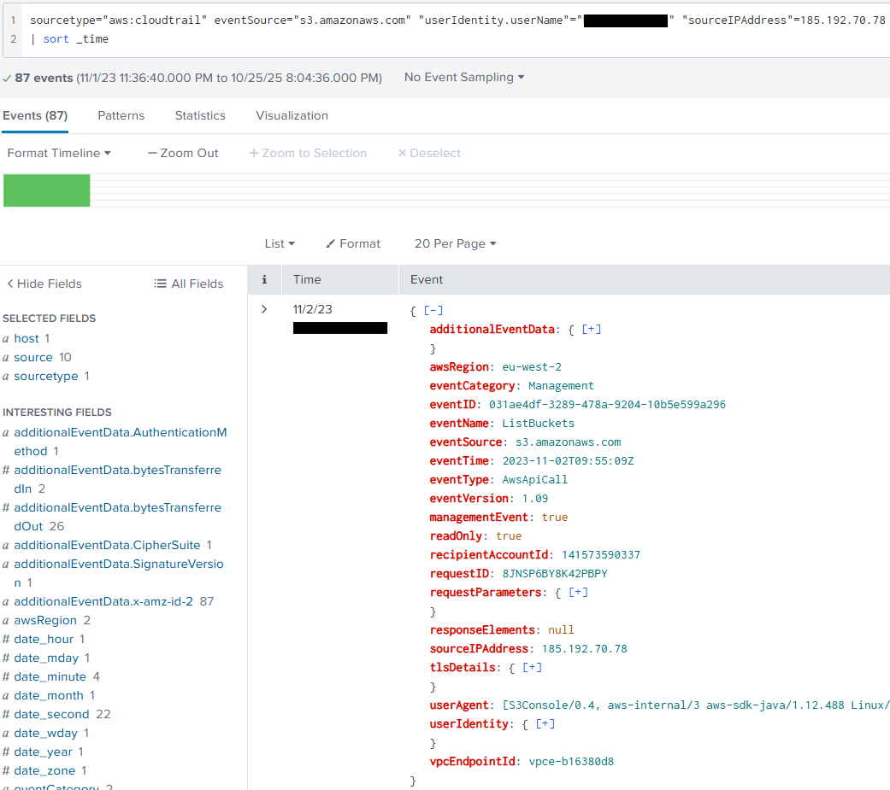
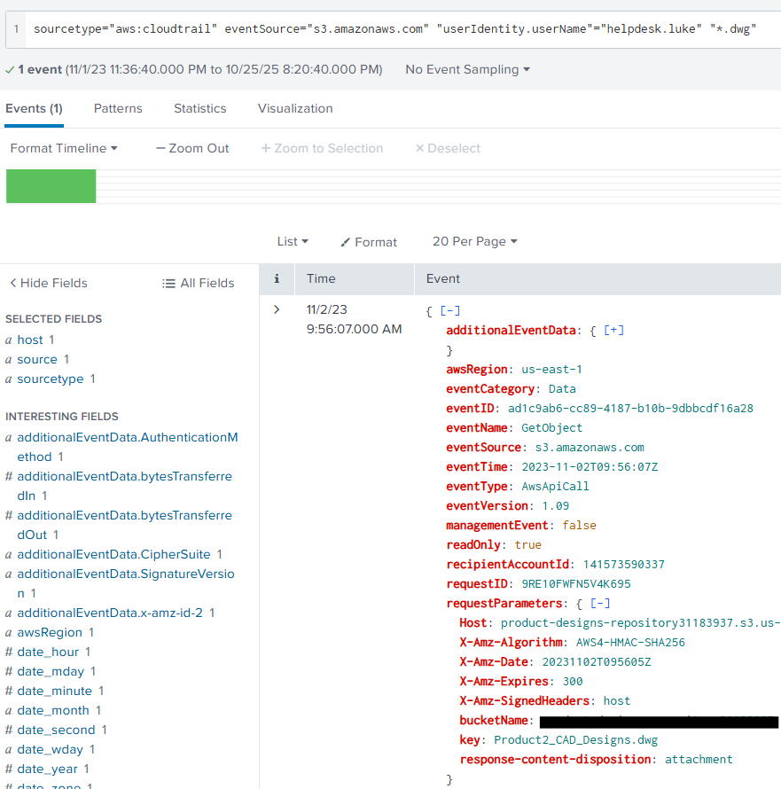
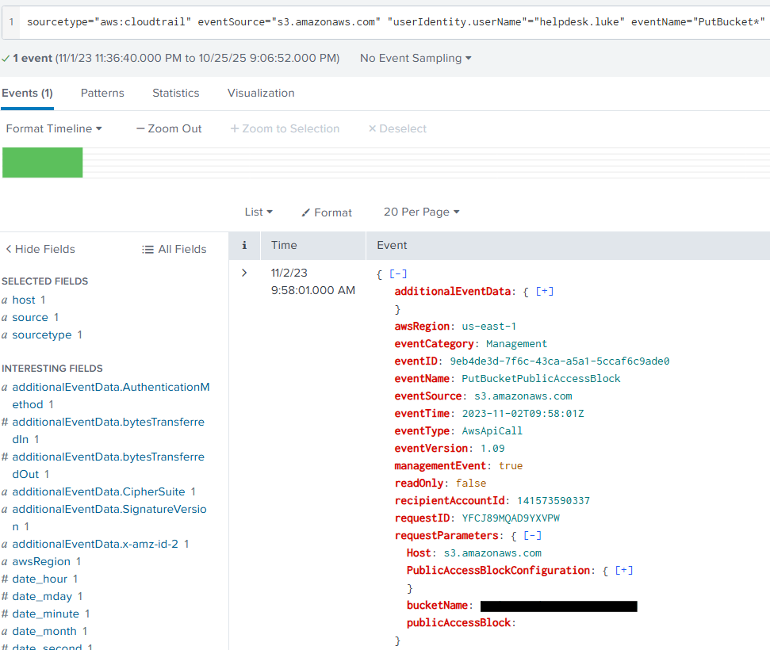
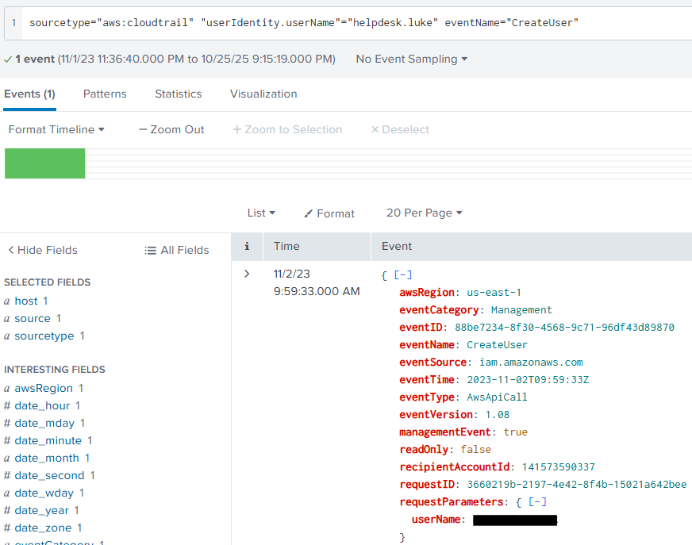
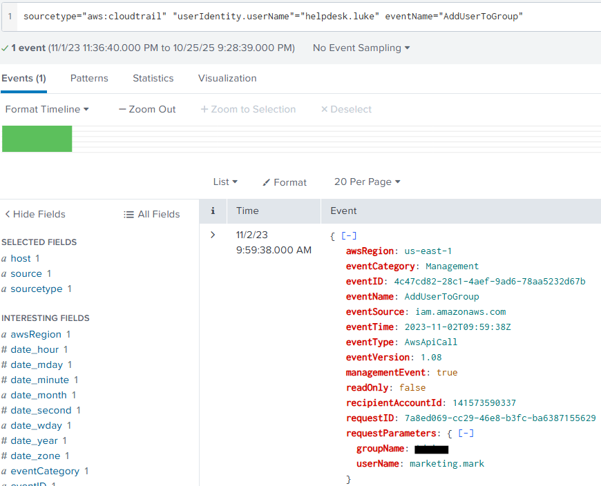

Game Vulnerability Researcher | Anti-Cheat Enthusiast
Here are some of my favorite projects I've worked on
Today, we are going to be looking at AWSRaid. A cyberdefense lab published by Cyberdefenders.
If you haven't tried out Cyberdefenders,
I highly recommend you check it out! It's a great way to get more acquainted with the defensive side of cybersecurity. Especially if you're used to working primarily on offensive security.
This lab utilizes a Splunk instance that contains AWS CloudTrail logs. The goal of the lab is to use these logs to identify unauthroized access, analyze configuration changes, and detect persistence mechanisms.
Please hover over any words highlighted in purple to get a description of what they mean!
Your organization utilizes AWS to host critical data and applications. An incident has been reported that involves unauthorized access to data and potential exfiltration. The security team has detected unusual activities and needs to investigate the incident to determine the scope of the attack.
The only kind of events collected in this lab are defined as "aws:cloudtrail". Going into this lab, I had never interacted with CloudTrail in the past and don't have a lot of experience with Splunk.
Fortunately, I was able to learn a lot about each of them while completing this lab and looking through Cyberdefender's Official AWSRaid Walkthrough as well. I will speak more on what all I learned as we go through each question.
The first thing we need to find, is the username of the compromised user. The first thing we need to identify is the layout of "aws:cloudtrail" events. So let's do a general query and see what we can find out:
sourcetype="aws:cloudtrail"
That will result in this event being shown. Now we can take a look at everything contained in the event.
From my experience enteracting with these events, the main things we'll want to filter our queries by are:
The next thing we need to figure out, is how to identify what a succesful login attempt looks like. In order to do this, I searched for a list of aws:cloudtrail eventName and eventSouce names.
While there doesn't seem to be a lot of official documentation on all the choices. I fortunately found a GitHub repository that contained a list of eventNames created by pkazi. You can find the list here: pkazi/clouldTrainEventNames.list
I then searched through the list for any eventName's that include "login". From that I found the eventName: consoleLogin
Performing an additional query to now filter by this event we can find a list of successful and failed login attempts:
sourcetype="aws:cloudtrail" eventName="consoleLogin"
Now that we see attempted logins, we can look into the responseElements to see if the login was successful or a failure.
If we decide to then filter by successful logins, we can see that there is a total of 16 successful logins. Not a narrow enough search to identify which one may be our compromised account.
If we filter by failed logins, we might be able to identify something around our bad actor. We'll run the following query to check for this:
sourcetype="aws:cloudtrail" eventName="consolelogin" "responseElements.ConsoleLogin"="Failure"
That will result in a failed login attempt being shown which I'll include an example of here:
Once we take a look at the other failed login attempts, we can notice that a large quantity of failed attempts coming from a single IP address in the sourceIPAddress field. This could be from password fuzzing or some other form of password brute-forcing.
Now that we have a suspicious IP address, we can filter by that IP and check ConsoleLogin for successful logins.
sourcetype="aws:cloudtrail" eventName="consolelogin" "responseElements.ConsoleLogin"="Success" "sourceIPAddress"=***.***.**.**
After we filter by this, we see a single event listed. We can then open the userIdentity field and see the userName the bad actor succssfully logged in with.
Now we need to find the first time our bad actor accessed an S3 object using the compromised account. So we need to find out how to filter for S3 objects as well as filter for our compromised used.
If you look back at the results of the first query we ran. You may have noticed that the eventSource was set as s3.amazonaws.com. If we filter by this, we can see events that interact with S3 buckets. If we then include a filter for our compromised user, we try and identify the intial access by running this query:
sourcetype="aws:cloudtrail" eventSource="s3.amazonaws.com" "userIdentity.userName"="helpdesk.luke" "sourceIPAddress"=185.192.70.78
| sort _time
We can utilize | sort _time to sort by the oldest event that was logged. That query will result in this event being shown:
Though blurred in the image above, the listed event will include the first time our compromised account accessed an S3 bucket.
This question wants us to find an S3 bucket that was accessed by the attacker and contains a DWG file.
I learned during this question that while the general structure for filters is ≤field≥ = ≤value≥. You can also search by putting text between quotes. So now we change our query and search for our compromised account accessing a S3 bucket where the event contains a DWG file like so:
sourcetype="aws:cloudtrail" eventSource="s3.amazonaws.com" "userIdentity.userName"="helpdesk.luke" "*.dwg"
That will result in the following event being shown:
As you can see above, if we open the requestParameters. We can see the Key field which contains the name of the .DWG file, and above it we can see the name of the S3 bucket that was accessed. Giving us our answer!
Now is where the GitHub page I mentioned earlier will come in handy. We need to find an eventName or eventSource that allows us to look at events tied to changes to an S3 bucket that will allow for public access.
If you navigate to that eventName list, you can press ctrl + f and then search for any keywords that has to do with an S3 bucket, and making it public.
I advise you go through and try to find some potential eventName's on your own! However the strategy I used was searching for the word "bucket". This resulted in 38 eventNames coming back.
Within those event names however lied three groups of names. One prepending with Delete, another with Get, and finally one with Put. Since I am no expert in aws:cloudtrail. I decided to then use a query that looked for any eventName's that included "PutBucket" since we are looking for configuration changes.
This is the query I used:
sourcetype="aws:cloudtrail" eventSource="s3.amazonaws.com" "userIdentity.userName"="helpdesk.luke" eventName="PutBucket*"
That query resulted in finding this single event:
Within that event, if we look within the requestParameters we can see a bucket name listed. Giving us our answer!
We can use the same approach as question 4 when approaching how to identify what event would represent our bad actor creating an account.
So we can navigate back to the GitHub page and search for more keywords. One obvious one we can search with is "create". This does however result in 334 results... Maybe we could try and search using "user".
Though this results in 79 results, it's a lot better than before. Now we can do a quick scan over the listed eventNames to see if anything sticks out.
Using this approach we can find the eventName "CreateUser". Which we can then use in the following query:
sourcetype="aws:cloudtrail" "userIdentity.userName"="helpdesk.luke" eventName="CreateUser"
This will result in us finding a single event centered around an account being created:
Within that event we can once again check the requestParameters and we will find the username for the account that was created!
We'll rely on the eventName list on last time to try and find an eventName that is tied to adding a user to a group.
So let's search for "group" and parse through the results to see if we can see anything that would fit what we're looking for.
A few ones that might fit is "AddMembersToGroup", "AddUsersToGroup", "AddUserToGroup", "AddOrUpdateGroups", etc...
I suggest playing around with different ones to see if you can find one that shows the attacker adding the account to a group. If you'd prefer to know the right one, the eventName related to this action is AddUserToGroup
Knowing this, we can use the following query:
sourcetype="aws:cloudtrail" "userIdentity.userName"="helpdesk.luke" eventName="AddUserToGroup"
This query will result in the following event:
Looking within the requestParameters we can see the name of the group the created account was added to!
You have now successfully completed the Cyberdefenders AWSRaid lab!
I hope this Writeup was able to teach out something or atleast give you another way to approach sovling labs where you're not sure where to start.
When there's so much in IT / Cybersecurity to know it can be daunting diving into the unknown, but with enough time and persistence. I personally believe anyone can learn anything!
So please take care, take some time to learn something new, and happy game hacking!
NitoTech